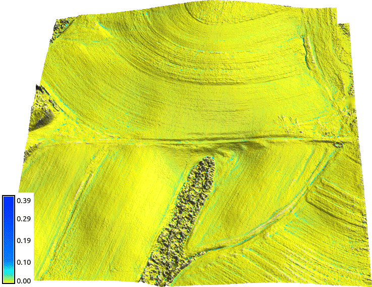

Process-based water flow simulation
Helena Mitasova, Anna Petrasova, Vaclav Petras
Learning objectives
- surface water flow modeling components
- shallow water flow equations
- numerical methods, path sampling
- applications: surface runoff, dam breach
- visualization of surface water flow dynamics
Modeling components: overland flow
- Modeled quantity:
water depth [m], discharge [m$^3$/s]
- Spatial and temporal scale:
first order stream [1m resolution], single storm [minutes]
- Configuration space and interactions:
water depth and precipitation interaction with topography, soil properties, land cover, infrastructure...
- Governing equations:
bivariate shallow water flow equation, Mannings equation..
Shallow water flow equation
Assumes negligible vertical variability in flow velocity,
it is used to simulate:


Shallow water flow equations
- Continuity equation: mass conservation
- Momentum conservation equations (not considered here)
also refered to as St Venant equations.
Continuity equation for flow in open channel
$$ {\partial h \over \partial t} + \left( {\partial h v_x \over \partial x} + {\partial h v_y \over \partial y} \right) = 0$$
- $h$ [m] is the depth of flow,
- $t$ [s] is the time,
- ${\bf v}=(v_x,v_y)$ [m/s] is the flow velocity vector
- $(x,y)$ location in 2D space
- $h$ and ${\bf v}$ are variable in space and time (dynamic fields)
-
Shallow water flow during storm
Given rainfall excess rate $i_e$ SWF can be written as:
$$ {\partial h \over \partial t} + \left( {\partial h v_x \over \partial x} + {\partial h v_y \over \partial y} \right) = i_e$$
where flow velocity ${\bf v} = (v_x, v_y)$ is given by Manning's relation
$${\bf v} = {k\over n} h^{2/3} s^{1/2} {\bf s_0}$$
- $i_e$ [m/s] is rainfall excess (runoff) = (rainfall $-$ infiltration $-$ vegetation intercept)
- $n$ is dimensionless Manning's roughness coefficient (property of land cover)
- k=1 [$m^{1/3}/s$] is corresponding dimension constant
- $s$ is slope steepness
- ${\bf s_0}$ is unit vector in the flow direction
- we assume that slope of water surface is the same as elevation surface slope
SWF equations solutions
Estimate water depth $h$ at a location $(x,y)$ and time $t$.
- Simplified approximations for steady state: function of flow accumulation (contributing area)
- Numerical solutions are needed for modeling:
- dynamic wave: coupled continuity and momentum conservation equations
- diffusive wave: incorporates dynamic water surface slope
- kinematic wave: approximates water surface slope by static elevation surface slope
- Numerical methods: finite difference, finite element, finite volume, QMC path sampling
Surface flow modeling methods
- input: DEM with depression
- steady-state approximation: flow accumulation using least cost path
- D-inf flow accumulations with depression as sink
- kinematic wave: water accumulates is depression
- diffusive wave: water fills depression and flows out
- diffusive wave with predefined channel through depression

Water depth is represented as a surface in 3D to highlight the differences in methods
Dynamic surface flow modeling
Shallow water flow modeling with diffusion term using path sampling method:
Path sampling method
Solution of SWF equation is based on duality between particle and field representation:
water depth is a function of particle density


Particles show single impulse, water depth shows accumulated depth
Path sampling method for SWF
Solution of continuity equations for
a steady water flow that is close to kinematic wave approximation
$$ \partial h({\bf r},t)/\partial t =0 \quad \longrightarrow \quad \nabla \cdot [ h({\bf r}){\bf v}({\bf r})] = i_e({\bf r})$$
approximate diffusive wave effects $ \propto \nabla^2 [h^{5/3}({\bf r})]$ :
$$-{\varepsilon({\bf r})\over 2 }\nabla^2 [h^{5/3}({\bf r})] +\nabla \cdot [ h({\bf r}){\bf v}({\bf r})] = i_e({\bf r})$$
add equation for particle movement: Green's function solution
Evolution of water depth
D-inf SFD approximation and path sampling solution


Path sampling method
Solution of SWF equation incorporates spatially variable flow velocity ${\bf v} = {k\over n} h^{2/3} s^{1/2} {\bf s_0}$:
- variable rainfall excess (impact of soils and land cover on infiltration),
- topography (slope steepness)
- land cover (Mannings roughness coefficient)

Applications for different types of landscapes
Urban flooding: sub-meter resolution
Path sampling solution for overland flow: with uniform rainfall
and land cover, approx. diffusive wave


Urban flooding: sub-meter resolution
Post-storm water in a floodplain
Landscape with pits
Surface water simulation in a landscape with numerous depressions
Geometry-based simulation would combine depression filling with indepently run flow routing
Overland flow with microtpography
Surface water at ultra high resolutions (0.3m): tilled field

Spatially variable land cover
Overland flow with spatialy variable land cover parameters (rainfall excess, Mannings n)

Impact of development
Scenarios with spatialy variable land cover due to construction and land change

Path sampling method: accuracy
Error is proportional to the $1/\sqrt N$, where N is the number of particles


Path sampling method: accuracy
Error is proportional to $1/\sqrt N$, $N$ is number of particles

Multiscale implementation
Path sampling enables implementation with multiple resolutions by adjusting
the weight of the particles

Finite volume solution
Dam breach model - full diffusive wave solution with backwater effect

see supplemental material for equations and r.damflood manual page for references
Assignment
Surface water during hurricane Alberto

Assignment
Surface water during hurricane Alberto

Assignment
Surface water flow with uniform cover and enforced channel
Assignment
Coupling DEM-based gradient with enforced channel:
${\partial z \over \partial x}$ from DEM is replaced with ${\partial z \over \partial x}$ from the stream
in grid cells where stream is located using map algebra
same is applied to $y$ direction
Assignment
Spatially variable land cover: increased roughness and reduced runoff
Assignment
Rainfall excess rate $<5,50>$, Mannings roughness $<0.01,0.5>$
Assignment
Spatially variable land cover: increased roughness and reduced runoff
Summary
- we defined surface water flow modeling components
- we introduced shallow water flow equations (SWFE)
- we explored applications of (SWFE)
- we visualized surface water flow dynamics